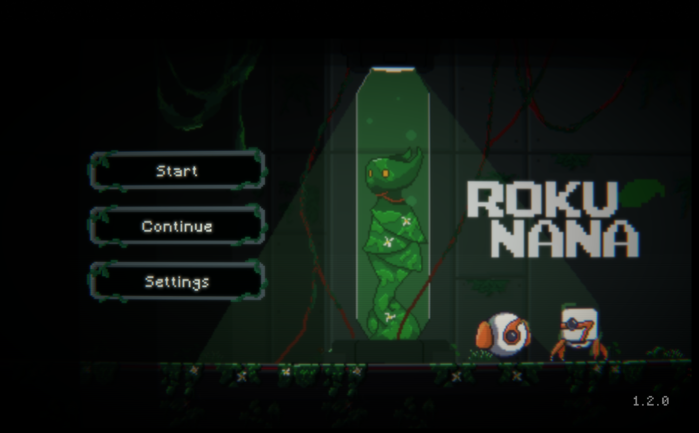
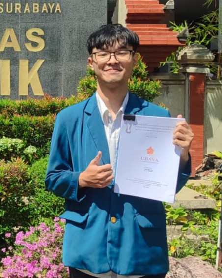
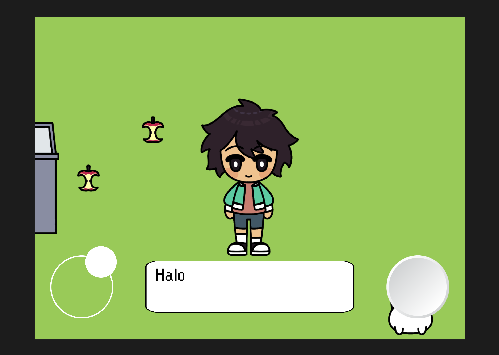
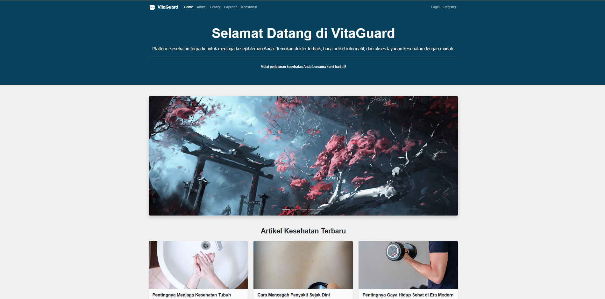
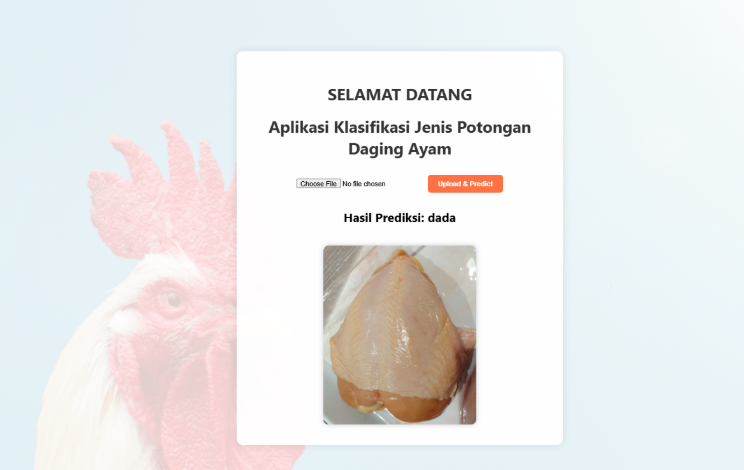
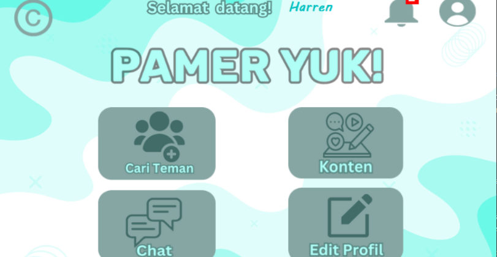
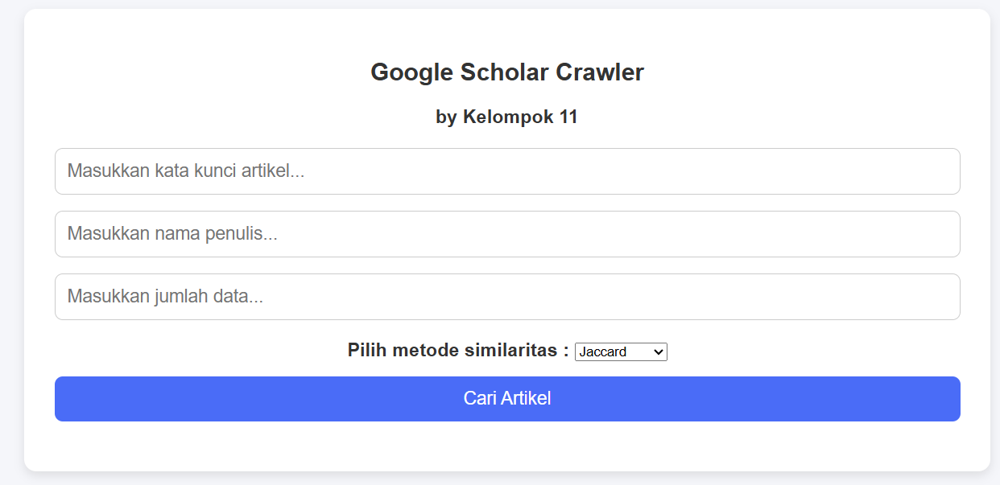
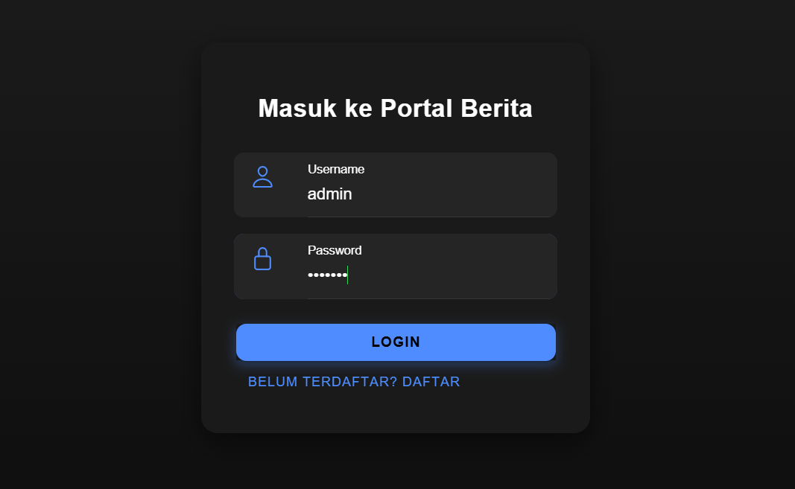
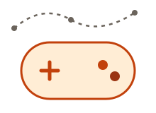

Game
Roku & Nana
Sebuah game 2D yang menggabungkan elemen platformer dan puzzle.
Mendapat penghargaan di Game JamKontribusi saya
- Mengimplementasikan mekanik gameplay utama.
- Mengimplementasikan sistem UI Boss Level.
Terbuka untuk magang & kolaborasi
Software Engineer
Mahasiswa aktif semester 7 Teknik Informatika, Universitas Surabaya, dengan fokus machine learning. Saat ini saya mengerjakan Tugas Akhir tentang sistem rekomendasi buku. Di luar itu, saya mendalami pengembangan game sebagai hobi.

Karya
Beberapa proyek machine learning, game, dan web yang pernah saya kerjakan.

Game
Sebuah game 2D yang menggabungkan elemen platformer dan puzzle.
Mendapat penghargaan di Game Jam
Game Edukasi
Sebuah game edukasi yang bertujuan untuk membantu anak SD membuang sampah sesuai kategori.

Web
Website kesehatan yang menyediakan informasi dan layanan untuk masyarakat. Website menyediakan fitur artikel, konsultasi, atau cek kesehatan.

Machine Learning
Model machine learning untuk memprediksi bagian potongan daging ayam berdasarkan data citra.

Proyek akhir mata kuliah Basis Data

Journal Web Crawler

Hybrid mobile web application
Bahasa dan alat yang saya gunakan dalam proyek.
Perjalanan
2023 – sekarang
Universitas Surabaya
Mahasiswa aktif Universitas Surabaya. Semester 7 dengan fokus machine learning. Sedang mengerjakan tugas akhir tentang sistem rekomendasi buku.
Pendidikan2024 – 2025
EFM Radio Kampus
Bertanggung jawab atas koordinasi dan manajemen divisi produser di EFM Radio Kampus.
OrganisasiPenghargaan
2026
Kontak
Saya terbuka untuk magang, proyek, maupun kolaborasi.
ignatiusfelixc@gmail.com